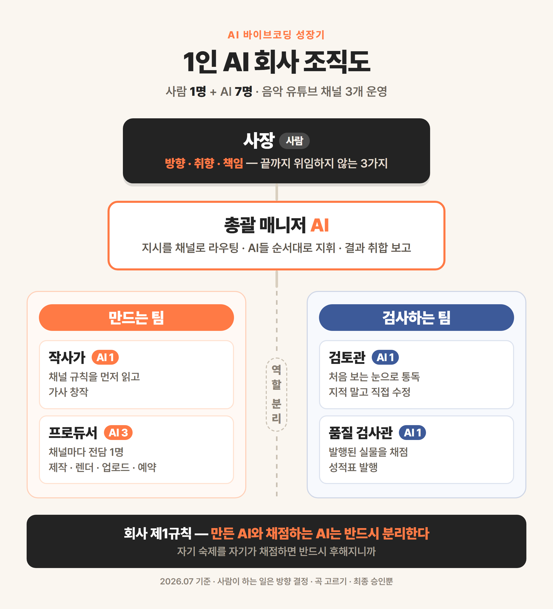

세 줄 요약. 저는 회사 다니면서 음악 유튜브 채널 세 개를 혼자 운영합니다. 비결은 AI를 '잘 쓰는 것'이 아니라, 역할이 다른 AI 일곱을 두고 회사처럼 굴리는 것이었어요. 작사 담당, 검토 담당, 채널별 제작 담당 셋, 품질 검사 담당, 그리고 이들을 지휘하는 총괄까지 — 이 연재는 그 '1인 AI 회사'의 조직도와 운영 규칙, 그리고 사고 친 이야기를 전부 공개합니다.
(이 글은 '1인 AI 회사 운영기' 6부작의 1편입니다. 앞선 '유튜브 자동화 6부작'이 채널 관리의 기술편이었다면, 이번 시리즈는 콘텐츠를 만들어내는 조직 이야기입니다.)
낮에는 15년차 직장인, 밤에는 유튜브 채널 세 개의 사장. 이렇게 말하면 다들 "그게 물리적으로 되나요?"라고 묻습니다. 저도 처음엔 안 됐습니다. 채널 하나에 곡 하나 올리는 데 저녁을 통째로 갈아 넣었으니까요. 지금은 저녁에 지시 몇 마디와 승인 몇 번이면 곡이 만들어지고, 영상이 렌더되고, 예약 발행까지 걸립니다.
바뀐 건 제 실력이 아닙니다. 조직이 생겼습니다.
AI를 '쓰는' 사람과 AI로 '회사를 차린' 사람
처음엔 저도 AI를 만능 알바생 하나처럼 썼습니다. 작사도 시키고, 영상도 시키고, 검사도 시키고 — 전부 한 창에서요. 그랬더니 이상한 일이 생겼습니다. 방금 가사를 쓴 AI에게 "이 가사 어때?"라고 물으면 늘 "좋습니다"라고 해요. 자기가 쓴 거니까요.
사람 회사가 왜 팀을 나누는지 그때 이해했습니다. 만드는 사람과 검사하는 사람이 같으면 품질이 무너집니다. 그래서 역할별로 AI를 나눠 '채용'하기 시작했어요.
우리 회사 조직도 — 사람 1명, AI 7명

✅ 조직도 초안 — 이대로 쓰면 됩니다 (수정 의견 주시면 반영). 파일: blog-s2/orgchart.png
지금 우리 회사의 구성원입니다.
사장(사람, 저) — 방향 결정, 곡 생성 버튼 누르기, 최종 판단. 그리고 월급날 없음
총괄 매니저 AI — 제 지시를 알아듣고 어느 채널 일인지 판별해, 아래 전문 AI들을 순서대로 굴리고 결과를 취합해 보고
작사가 AI — 채널 규칙을 읽고 가사를 쓰는 창작 담당
검토관 AI — 작사가가 쓴 가사를 '처음 보는 눈'으로 다시 읽는 별도 AI (2편에서 자세히)
프로듀서 AI ×3 — 채널마다 전담 한 명씩. 음원과 이미지를 받아 영상 제작·업로드·예약까지
품질 검사관 AI — 발행된 실물을 채점표 기준으로 검사해 성적표 발행 (5편에서 자세히)
포인트는 숫자가 아니라 분업입니다. 일곱을 두는 이유는 각자 맡은 일이 다르고, 특히 만드는 쪽과 검사하는 쪽을 갈라놔야 하기 때문이에요.
"AI가 일곱 명이면 관리가 더 힘들지 않나요?"
제가 제일 많이 받는 질문인데, 오히려 반대였습니다. 비결은 세 가지 설계 원칙에 있습니다. 이 연재에서 하나씩 풀 내용이기도 합니다.
1. 역할 분리 — 만드는 AI와 채점하는 AI를 반드시 나눈다. 자기 숙제를 자기가 채점하면 반드시 후해진다. (2편)
2. 문서가 헌법 — 규칙을 매번 말로 설명하지 않고 문서 한 벌에 적어둔다. AI들은 일 시작 전에 그걸 읽고 움직인다. (3편)
3. 사고는 철칙이 된다 — 사고가 나면 원인을 규칙 한 줄로 만들어 문서에 박는다. 같은 사고는 두 번 나지 않는다. (4편)
이 세 줄이 회사의 전부입니다. 나머지는 이 원칙이 굴러가게 하는 장치들이에요.
실제로 하루가 어떻게 돌아가냐면
맛보기로 곡 하나가 세상에 나오는 흐름만 보여드릴게요.
1. 제가 총괄 AI에게 말합니다. "○○ 스타일 노래 다섯 개 만들자."
2. 작사가 AI가 채널 규칙을 읽고 다섯 곡을 씁니다 → 검토관 AI가 처음 보는 눈으로 전곡을 다시 읽고 고칩니다.
3. 완성된 가사가 복사 버튼 달린 웹페이지로 만들어져 제 카톡으로 옵니다. 저는 폰으로 그걸 음악 생성 AI에 붙여넣어 곡을 뽑습니다. (여기가 사람 일)
4. 곡 파일을 폴더에 넣으면 프로듀서 AI가 영상을 만들고, 자막 싱크를 검수받고, 업로드·예약까지 겁니다.
사람이 하는 일은 3번과 마지막 확인뿐입니다. 그런데 이 흐름이 처음부터 매끄러웠을 리 없죠. 남의 영상을 건드릴 뻔한 사고, 댓글이 꺼진 채 나간 영상, AI가 남의 가사를 제 것처럼 내민 사건 — 전부 겪었고, 전부 이 연재에서 공개합니다.
자주 묻는 질문
Q. 코딩을 알아야 이런 걸 만들 수 있나요?
A. 저는 문과 출신이고 코딩을 배운 적이 없습니다. 이 조직의 뼈대는 코드가 아니라 '역할 정의와 규칙 문서'예요. 그건 한국어로 쓰는 겁니다. 물론 자동화 도구들이 붙어 있지만, 그것도 AI에게 말로 시켜 만들었습니다.
Q. AI를 일곱이나 쓰면 비용이 많이 들지 않나요?
A. AI 구독료는 제가 원래 쓰던 것 그대로입니다. 역할을 나누는 건 돈이 아니라 설계의 문제라서요. 같은 AI 서비스라도 "너는 작사가", "너는 검토관"처럼 역할과 규칙을 따로 주면 별개의 직원처럼 움직입니다.
Q. 그래서 채널은 잘 되고 있나요?
A. 구독자 수로 자랑할 단계는 아직 아닙니다. 다만 확실한 건, 혼자서는 물리적으로 불가능했던 생산량 — 세 채널에 꾸준히 곡을 발행하는 것 — 이 가능해졌고, 품질 사고가 시스템에 걸러지기 시작했다는 겁니다. 성과 이야기도 언젠가 솔직하게 쓰겠습니다.
🎁 오늘의 실험 — AI에게 직함 하나 달아주기
늘 쓰는 AI 채팅창을 열고, 이번엔 일을 시키기 전에 역할부터 정해주세요. "너는 내 보고서 검토관이야. 내가 뭘 주든 오탈자, 어색한 문장, 근거 빈 주장 세 가지만 지적해줘." 이렇게 직함과 업무 범위를 준 AI는 그냥 물어볼 때와 완전히 다르게 일합니다. 이게 1인 AI 회사의 첫 채용입니다.
다음 편 예고: 조직도에서 제일 이상해 보이는 자리, '검토관'. 작사가 AI가 쓴 가사를 왜 굳이 다른 AI에게 다시 읽히는지 — 실제로 일곱 곡 중 다섯 곡이 고쳐진 날의 이야기입니다.
※ 이 글의 시스템 구성은 2026년 7월 기준이며, 전부 제가 실제 운영 중인 채널 이야기입니다.
2편 AI 결과물을 못 믿겠다면 — 'AI끼리 검사' 시키는 방법
결론부터
세 줄 요약. AI에게 "네가 만든 거 어때?"라고 물으면 거의 항상 "좋습니다"라고 합니다. 거짓말이 아니라, 자기 눈에는 진짜 좋아 보이는 거예요. 그래서 저는 만든 AI와 검사하는 AI를 다른 사람(?)으로 분리했고, 검토관 AI가 투입된 첫날 일곱 곡 중 다섯 곡이 수정됐습니다. AI 결과물이 미덥지 않은 분께 제일 먼저 권하는 장치입니다.
(1인 AI 회사 운영기 6부작의 2편입니다. 1편의 조직도에서 '검토관' 자리가 왜 있는지에 대한 이야기예요.)
AI는 자기 숙제에 늘 후합니다
처음엔 한 창에서 다 했습니다. 가사를 쓰게 하고, 같은 창에서 "이 가사 괜찮아? 문제 없어?"라고 물었죠. 돌아오는 답은 늘 비슷했습니다. "감정선이 잘 살아 있고 후렴이 인상적입니다."
그럴 수밖에 없습니다. 사람도 자기가 쓴 글은 자기 눈에 그럴듯해 보이잖아요. 오탈자는 남의 글에서만 보이고요. AI도 똑같았습니다. 자기가 방금 생성한 문장은 자기 논리 안에서 만들어진 거라, 그 논리 안에서 다시 읽으면 아무 문제가 없어 보이는 겁니다.
문제는 이게 취미 수준을 넘어 채널에 발행되는 콘텐츠라는 것. 품질 검사가 형식적이 되는 순간 사고는 시간문제였습니다.
그래서 '검토관'을 따로 채용했습니다
해법은 단순했습니다. 회사가 하는 것처럼, 만드는 사람과 검사하는 사람을 나누는 것.
작사가 AI가 곡을 다 쓰면, 그 결과물을 완전히 새로운 AI 세션 — 앞의 작업 맥락을 하나도 모르는, 방금 출근한 검토관 — 에게 넘깁니다. 검토관에게 주는 지시는 이렇습니다. "너는 히트곡을 수십 곡 만든 프로듀서다. 이 가사들을 처음 보는 눈으로 통독하고, 걸리는 곳은 지적만 하지 말고 직접 고쳐라."
포인트가 두 개 있습니다.
처음 보는 눈 — 검토관은 작사가가 어떤 의도로 썼는지 모릅니다. 그래서 독자(청취자)와 같은 조건으로 읽습니다. 의도를 모르고 읽어도 통해야 진짜 통하는 겁니다.
지적 금지, 수정 의무 — "이 부분이 아쉽네요"로 끝나면 검토가 아니라 감상입니다. 걸리면 반드시 고친 버전을 내놓게 했습니다.
검토관 투입 첫날 — 7곡 중 5곡이 고쳐졌습니다
트로트 채널 신곡 일곱 곡을 작업한 날이었습니다. 작사가 AI는 전곡 "이상 없음"으로 마감했어요. 그런데 검토관 AI가 통독을 시작하자마자 걸러내기 시작했습니다.
대표 사례 하나. 가사에 "반을 접고 갔었지"라는 구절이 있었습니다. 쓴 작사가는 문제없다고 봤어요(자기는 의미를 아니까요). 그런데 검토관은 "처음 듣는 사람은 이게 무슨 뜻인지 잡히지 않는다"고 즉시 지적하고 알아듣게 고쳤습니다. 저도 다시 보니 그랬습니다. 몇 번을 읽어도 안 걸렸는데, 모르는 눈에는 한 번에 걸린 거예요.
그날 일곱 곡 중 다섯 곡이 이런 식으로 수정됐습니다. 같은 AI 모델인데도요. 차이는 능력이 아니라 자리였습니다.
📸 (이미지 자리) 검토관 AI가 수정 내역을 남긴 작업판 화면
검토관에게 시키는 다섯 가지
우리 검토관의 채점 항목입니다. 노래 기준이지만, 어떤 일이든 응용될 겁니다.
1. 타겟 적합성 — 이 채널 청취자가 "내 얘기네" 할 내용인가
2. 한 방 — 이 곡만의 킥이 있나. 없으면 '무난한 곡'이고, 무난한 건 안 터진다
3. 소리 내어 읽기 — 눈으로 좋은 가사와 불러서 좋은 가사는 다르다
4. 반복 확인 — 같은 어미·같은 단어가 연달아 나오지 않나
5. 전체 맥락 — 여러 곡을 나란히 놓고 감정 곡선이 단조롭지 않나
특히 5번이 별도 검토관이어야 하는 이유입니다. 곡 하나하나는 멀쩡해도, 일곱 곡이 다 비슷한 얘기면 앨범으로는 실패거든요. 만든 사람은 한 곡씩 만들었으니 그게 안 보입니다.
자주 묻는 질문
Q. 같은 AI인데 창만 바꾸는 게 무슨 의미가 있나요?
A. 생각보다 큽니다. AI는 대화 맥락 안에서 생각하는데, 만든 맥락을 이어받은 AI는 그 맥락을 변호하는 쪽으로 기울어요. 맥락이 없는 새 세션은 결과물만 보고 판단합니다. 사람으로 치면 '내 초안에 애착 있는 나'와 '남의 글 첨삭하는 나'의 차이예요.
Q. 검토를 한 번 더 하면 시간이 배로 들지 않나요?
A. 검토관이 통독하고 고치는 데 걸리는 시간은 창작보다 훨씬 짧습니다. 그리고 발행 뒤에 문제를 발견해서 수습하는 비용과 비교하면, 검토는 공짜에 가깝습니다. 다섯 곡이 걸러진 날 이후로 저는 이 단계를 한 번도 뺀 적이 없습니다.
Q. 블로그 글이나 보고서에도 쓸 수 있는 방법인가요?
A. 그대로 됩니다. 초안을 쓴 창 말고 새 창을 열어 "처음 보는 독자 입장에서 읽고, 걸리는 문장은 직접 고쳐줘"라고 넘기면 돼요. 오늘의 실험으로 준비해뒀습니다.
🎁 오늘의 실험 — 내 글을 '모르는 AI'에게 넘겨보기
최근에 쓴 글이나 보고서 하나를 골라, 그걸 만들 때 쓰지 않은 새 AI 채팅창에 붙여넣고 이렇게 시켜보세요. "이 글을 처음 보는 독자다. 무슨 말인지 안 잡히는 문장, 근거 없는 주장, 어색한 표현을 찾아서 직접 고쳐줘." 내 눈과 만든 AI의 눈에 안 보이던 게 얼마나 걸리는지 — 아마 놀라실 겁니다.
다음 편 예고: 검토관까지 뽑았으면 다음 문제는 이겁니다. "이 규칙들을 매번 AI한테 다시 설명해야 하나?" 3편은 AI 회사의 사규 — 한 번 적으면 모든 AI가 따르는 헌법 문서 이야기입니다.
※ 이 글의 사례는 2026년 7월 기준, 제가 실제 운영한 작업 기록에서 가져왔습니다.
3편 AI에게 같은 설명을 매번 반복하고 있다면 — 사규 문서 한 벌의 힘
결론부터
세 줄 요약. AI는 유능한데 기억력이 없습니다. 어제 그렇게 설명했는데 오늘 또 처음부터죠. 해법은 설명을 반복하는 게 아니라 문서로 적어두고, AI가 일 시작 전에 그걸 읽게 하는 겁니다. 우리 회사는 헌법(전체 규칙) · 채점표(품질 기준) · 절차서(작업 순서) 세 층의 문서로 돌아가고, 저는 이제 매번 설명하지 않습니다.
(1인 AI 회사 운영기 6부작의 3편입니다. 1편 조직도, 2편 검토관에 이어 — 이번엔 그들이 따르는 '사규' 이야기.)
"어제 말했잖아"가 안 통하는 직원들
AI 직원들의 치명적 약점이 하나 있습니다. 퇴근하면(창을 닫으면) 다 잊어버립니다. 어제 공들여 설명한 채널 컨셉, 금지 표현, 발행 시간 — 오늘 새 창을 열면 백지예요.
처음엔 매번 다시 설명했습니다. 근데 채널이 세 개가 되고 AI가 일곱이 되니, 제 저녁 시간이 전부 '설명'으로 사라지더라고요. 게다가 사람이 매번 말로 설명하면 빠뜨리는 게 생깁니다. 어느 날은 금지어를 말 안 해줘서 이상한 가사가 나오고, 어느 날은 발행 시간을 깜빡해서 새벽에 영상이 올라가고.
그러다 깨달았습니다. 이건 AI 문제가 아니라 회사에 사규가 없는 문제라고요.
우리 회사의 문서 3층 구조
지금 우리 회사의 규칙은 문서 세 층에 담겨 있고, AI들은 일을 시작하기 전에 자기에게 해당하는 문서부터 읽습니다.
1층. 헌법 — 회사 전체 규칙 한 장
"어떤 지시가 오면 어느 채널 일인지 이렇게 판별한다", "발행 전엔 반드시 품질 검사를 거친다", "발행 시간은 채널별로 이 시각" 같은 전사 규칙입니다. 총괄 AI가 매 세션 제일 먼저 읽는 문서라, 제가 "트로트 신곡 작업하자" 한 마디만 해도 어느 폴더에서 어떤 절차로 움직일지 스스로 압니다.
2층. 채점표 — 채널마다 한 장
채널마다 '좋은 콘텐츠'의 기준이 다릅니다. 발라드 채널과 트로트 채널의 가사 결이 같을 수 없죠. 그래서 채널별로 품질 기준서를 한 장씩 뒀습니다. 재미있는 건 이 문서를 만드는 AI와 검사하는 AI가 같이 쓴다는 겁니다. 작사가는 이 기준에 맞춰 쓰고, 품질 검사관은 같은 문서로 채점해요. 기준이 한 장이니 "저는 그렇게 안 들었는데요"가 없습니다.
3층. 절차서 — 작업 순서 한 장
영상 제작처럼 매번 똑같이 반복되는 일은 순서를 문서로 박제했습니다. 여기서 우리 회사 제1원칙이 나옵니다. 곡마다 새 스크립트 금지. 곡이 바뀔 때마다 도구를 새로 만들면 매번 새 버그가 생기거든요. 곡 정보는 설정 파일 하나에만 적고, 도구는 모든 곡이 같은 걸 씁니다. 새 곡 발매가 '창작'이 아니라 '실행'이 되는 순간, 사고가 급감했습니다.
📸 (이미지 자리) 헌법 문서 일부 화면 (규칙 몇 줄이 보이게)
문서가 생기고 달라진 것
설명 시간 소멸 — "가요방 신곡 가자" 한 줄이면 됩니다. 나머지는 문서가 설명합니다.
품질 시비 소멸 — 만드는 쪽과 검사하는 쪽이 같은 채점표를 보니, 결과만 놓고 얘기합니다.
실수의 자산화 — 이게 제일 큽니다. 사고가 나면 원인을 규칙 한 줄로 만들어 헌법에 추가합니다. 그날부터 모든 AI가 그 규칙을 읽고 움직이니, 같은 사고가 반복되지 않아요. (이 얘기는 4편에서 사고 사례와 함께 자세히 합니다.)
사람 회사에서 15년 일하며 배운 것들이 여기서 다 쓰입니다. 신입에게 매번 말로 가르치는 팀장은 지치고, 온보딩 문서가 있는 팀은 굴러가죠. AI 회사도 똑같았습니다.
자주 묻는 질문
Q. 문서는 어떤 도구로 만드나요? 특별한 프로그램이 필요한가요?
A. 그냥 텍스트 문서입니다. 저는 메모장 수준의 마크다운 파일로 씁니다. 중요한 건 형식이 아니라 'AI가 일 시작 전에 반드시 읽는 위치에 두는 것'과 '규칙이 서로 모순되지 않게 한 곳에 모으는 것'이에요.
Q. 문서를 얼마나 자세히 써야 하나요?
A. 처음부터 완벽하게 쓰려고 하지 마세요. 저도 처음엔 다섯 줄이었습니다. AI가 일하다 틀리면 그때 한 줄 추가하는 식으로 키웠어요. 문서는 계획서가 아니라 축적물입니다. 지금 우리 헌법의 규칙 대부분은 실제 사고에서 나왔습니다.
Q. 회사 업무에도 적용할 수 있을까요?
A. 원리는 그대로입니다. 반복해서 시키는 일이 있다면 "이 일의 배경·기준·순서"를 문서 한 장으로 만들어두고, AI에게 일을 시킬 때 그 문서를 같이 주세요. 매번 처음부터 설명하는 것과는 결과물의 결이 다릅니다.
🎁 오늘의 실험 — 나만의 '지시 문서' 한 장 만들기
AI에게 자주 시키는 일 하나를 고르세요(메일 다듬기, 보고서 요약, 뭐든). 그 일에 대해 늘 반복하는 요구사항을 문서 한 장으로 적어두는 겁니다. "말투는 정중하되 간결하게, 세 문단 이내, 결론 먼저, 금지 표현은 ○○." 다음부터는 그 문서를 붙여넣고 "이 기준으로"라고만 하면 됩니다. 오늘 10분 투자가 매일 10분씩 돌려줍니다.
다음 편 예고: 사규가 있어도 사고는 납니다. 남의 영상을 건드릴 뻔한 날, 댓글이 꺼진 채 발행된 1호 영상, AI가 유명곡 가사를 제 것처럼 내민 사건 — 4편은 우리 회사 사고 백서, 그리고 사고 한 번을 규칙 한 줄로 바꾸는 과정입니다.
※ 이 글의 운영 방식은 2026년 7월 기준입니다.
4편 AI 자동화 사고 3건 솔직 공개 — 사고 한 번을 규칙 한 줄로 바꾸는 법
결론부터
세 줄 요약. AI 자동화를 굴리면 사고가 납니다. 안 나게 할 수는 없고, 같은 사고가 두 번 나지 않게 할 수는 있습니다. 방법은 사고가 날 때마다 원인을 규칙 한 줄로 만들어 회사 헌법에 박는 것. 오늘은 우리 회사에서 실제로 났던 사고 세 건을 원인과 재발 방지 규칙까지 통째로 공개합니다.
(1인 AI 회사 운영기 6부작의 4편입니다. 3편에서 말한 '사고는 철칙이 된다'의 실전편이에요.)
자동화 이야기는 보통 성공담만 팔립니다. 그런데 제가 이 시리즈에서 제일 쓰고 싶었던 게 이 사고 백서입니다. 사고를 겪기 전의 저에게 누가 이 글을 줬다면, 몇 개는 안 겪었을 테니까요.
사고 1. 자동화가 남의 영상을 건드렸다
제일 아찔했던 사고입니다. 영상을 업로드하고 예약 발행을 거는 자동화가 있는데, 어느 날 예약을 걸어야 할 영상을 찾을 때 "채널의 최신 영상"을 집는 방식으로 동작했어요. 평소엔 방금 올린 영상이 최신이니 문제가 없었습니다.
그런데 그날은 다른 영상이 그 사이에 채널에 들어와 있었습니다. 자동화는 아무 의심 없이 그 영상 — 제가 의도하지 않은 영상 — 의 발행 설정을 바꿔버렸어요. 발견하고 등에서 식은땀이 났습니다. 자동화는 시킨 대로 할 뿐, 그게 엉뚱한 대상이라는 걸 모릅니다.
→ 규칙 한 줄: 영상을 집을 때는 업로드 직후 받은 고유 번호(ID)나 제목 정확 일치만 쓴다. "최신 영상" 같은 어림짐작 금지.
이 사고가 준 교훈이 이 편의 뼈대입니다. 자동화 사고의 대부분은 AI가 멍청해서가 아니라, 사람이 "설마 그런 상황이 오겠어" 하고 애매한 지시를 둬서 납니다.
사고 2. 1호 영상이 댓글 꺼진 채 나갔다
채널 하나를 새로 열고 첫 영상을 발행한 날, 뿌듯하게 링크를 열었는데 댓글창이 없었습니다. 유튜브 설정이 어느샌가 '댓글 사용 안 함' 상태로 나간 거예요. 새 채널의 첫 영상, 시청자와 처음 인사할 자리에 대화 창구가 닫혀 있던 겁니다.
더 무서운 건 이게 소리 없는 사고라는 점입니다. 에러도 안 나고, 영상은 멀쩡히 재생되고, 알림도 없어요. 나중엔 한 채널에서 발행 영상 전체가 댓글이 꺼져 있는 걸 발견해 하나하나 복구하기도 했습니다. 원인은 채널의 업로드 기본값이 저도 모르게 바뀌어 있던 것.
→ 규칙 한 줄: 발행 후 반드시 실물을 열어 댓글 켜짐을 확인한다. 지금은 예약 직후 댓글 설정을 강제로 켜는 안전장치까지 자동화에 넣었고, 품질 검사관의 채점표 항목에도 있습니다.
📸 (이미지 자리) 품질 검사관 성적표에서 '댓글 켜짐' 확인 항목이 보이는 화면
사고 3. AI가 유명곡 가사를 제 것처럼 내밀었다
작사가 AI가 유명 발라드에서 영감을 받은 곡을 썼습니다. 저도 여러 번 읽었고, AI에게 "원곡과 겹치는 부분 없지?"라고 확인까지 했어요. AI는 "네, 오마주일 뿐 표절은 아닙니다"라고 답했습니다.
그런데 발행 전 품질 검사에서 검사관 AI가 원곡 가사를 실제로 웹에서 찾아 대조했더니 — 첫 소절이 원곡과 그대로 겹쳤습니다. 기억에 의존한 확인은 만든 쪽 AI도, 저도 통과시킨 걸, 실물 대조가 잡아낸 겁니다.
이 사고의 교훈은 특히 중요합니다. AI에게 "확인했어?"라고 물으면 AI는 자기 기억(학습 데이터의 흐릿한 인상)으로 답합니다. 그건 확인이 아니에요. 확인은 원본을 실제로 열어 대조하는 행위입니다.
→ 규칙 한 줄: 유명곡과 이름이 같거나 특정 곡을 참조한 가사는 원곡 가사를 웹에서 실제로 찾아 대조한다. 기억으로 판정 금지.
덕분에 저는 그 곡을 '모르고 발행'하는 대신 '알고 판단'할 수 있었습니다. 시스템이 주는 진짜 가치는 사고 방지 그 자체보다, 결정을 내리기 전에 사실을 알게 해주는 것이더라고요.
사고를 자산으로 바꾸는 절차
세 사고의 공통 처리 과정입니다. 우리 회사에서 사고가 나면 이 순서로 움직입니다.
1. 수습 — 일단 실물부터 바로잡는다
2. 원인 한 줄 — "왜"를 파고들어 한 문장으로 적는다 (애매한 지시? 확인 생략? 기본값 방치?)
3. 규칙 한 줄 — 재발을 막는 규칙으로 바꿔 헌법에 추가한다
4. 전파 — 다음 세션부터 모든 AI가 그 규칙을 읽고 움직인다
사람 조직에서는 사고 보고서가 서랍에 들어가면 끝이지만, AI 조직에서는 규칙 한 줄이 곧바로 전 직원의 행동이 됩니다. 이게 1인 AI 회사의 은근한 장점이에요. 조직 학습이 빛의 속도입니다.
자주 묻는 질문
Q. 이런 거 보면 AI 자동화, 무서워서 못 하겠는데요.
A. 순서만 지키면 괜찮습니다. 처음부터 발행처럼 되돌리기 어려운 일을 자동화하지 말고, 리포트·알림·초안처럼 틀려도 다치지 않는 일부터 맡기세요. 그리고 되돌리기 어려운 일에는 반드시 사람 승인이나 검사 단계를 끼워 넣고요. 우리 회사도 그 원칙으로 사고를 '아찔'에서 멈춰왔습니다.
Q. 규칙이 계속 늘어나면 나중에 감당이 안 되지 않나요?
A. 생각보다 안 늘어납니다. 같은 사고가 재발하지 않으니 규칙은 사고 종류만큼만 생겨요. 지금 우리 헌법의 철칙도 열 개 남짓입니다. 그리고 규칙이 늘어나는 속도보다 사고가 줄어드는 속도가 훨씬 빠릅니다.
Q. 사고를 미리 다 예상해서 막을 수는 없나요?
A. 없더라고요. 저도 체크리스트를 미리 만들어봤지만, 실제 사고는 늘 예상 밖에서 났습니다. 그래서 전략을 바꿨습니다. 예방을 포기하는 게 아니라, 사고 후 학습을 시스템으로 만드는 것. 한 번은 맞더라도 두 번은 안 맞는 회사가, 한 번도 안 맞으려다 매번 새로 맞는 회사보다 튼튼했습니다.
🎁 오늘의 실험 — 최근 실수 하나를 규칙 한 줄로
AI를 쓰다 겪은 실수 하나를 떠올려보세요(엉뚱한 답, 지어낸 정보, 뭐든). 그걸 "다음부터 ○○할 때는 반드시 ○○한다"라는 한 줄 규칙으로 적어서, 3편에서 만든 지시 문서에 추가하세요. 그 순간부터 그 실수는 '겪은 일'에서 '막아둔 일'이 됩니다.
다음 편 예고: 규칙과 사고 학습이 있어도, 마지막 물음은 남습니다. "그래서 이번에 나간 결과물, 괜찮은 거 맞아?" 5편은 발행 전후 두 개의 검문소 — '성적표 없이는 완료 보고도 없다'는 우리 회사 품질 시스템입니다.
※ 이 글의 사고 사례는 전부 2026년 상반기에 실제로 겪은 일입니다.
5편 "성적표 없이는 완료도 없다" — AI 품질 관리, 검문소 2개면 됩니다
결론부터
세 줄 요약. AI의 "다 됐습니다"는 희망사항일 때가 많습니다. 그래서 우리 회사는 검문소를 두 개 둡니다 — 만드는 도중에 한 번(통과 못 하면 다음 공정 진행 금지), 발행된 실물에 한 번(성적표 발행). 그리고 철칙 하나. 성적표가 없으면 그 일은 완료된 게 아닙니다.
(1인 AI 회사 운영기 6부작의 5편입니다. 2편의 검토관이 '창작물'을 본다면, 오늘의 검사관은 '공정과 실물'을 봅니다.)
AI의 "완료했습니다"에 데인 적 있으신가요
AI에게 일을 시켜본 분이라면 압니다. "완료했습니다"라는 시원한 보고 뒤에, 열어보면 뭔가 빠져 있는 경우요. 악의가 아닙니다. AI는 자기가 한 작업이 계획대로 끝났다고 진심으로 믿는 것뿐이에요. 문제는 그 믿음과 실물 사이의 틈입니다.
영상 발행처럼 대외적인 일에서 이 틈은 그대로 사고가 됩니다. 그래서 우리 회사는 '보고를 믿지 말고 실물을 확인한다'를 시스템으로 만들었습니다.
검문소 1 — 만드는 도중에 세운다 (통과 전 진행 금지)
첫 검문소는 공정 중간, 시간이 많이 드는 작업(영상 렌더링) 직전에 있습니다. 자막이 노래와 맞는지, 컷이 규칙대로 잘렸는지를 먼저 검사하고, 통과하지 못하면 렌더를 시작조차 못 하게 했어요.
순서가 핵심입니다. 렌더를 먼저 하고 나중에 문제를 발견하면 그 시간을 통째로 버리거든요. 검사는 항상 비싼 공정 앞에 세워야 합니다.
여기서 배운 것 하나 더. 검사 도구도 틀립니다. 우리 자동 검수기는 가끔 멀쩡한 자막을 "어긋났다"고 오탐하는데(반주 소리를 목소리로 착각), 처음엔 그 경고를 다 믿고 멀쩡한 걸 고치느라 시간을 썼습니다. 지금은 경고가 뜨면 더 정밀한 방법으로 실측해서 최종 판정합니다. 검사기의 경고는 '의심 신고'지 '판결'이 아니더라고요.
검문소 2 — 발행된 실물을 채점한다 (성적표 발행)
업로드와 예약이 끝나면, 제작을 지휘한 AI가 아니라 별도의 품질 검사관 AI가 출동합니다. 검사관은 유튜브에 실제로 올라간 실물을 열어, 채널 채점표(3편의 그 문서) 기준으로 하나하나 확인합니다.
예약 시각이 지시대로인가
제목·설명·태그가 채널 규칙대로인가
썸네일이 제대로 걸렸는가
댓글이 켜져 있는가 (4편 사고 이후 필수 항목)
영상 컷이 규칙대로인가
결과는 항목별 성적표로 돌아옵니다. 그리고 우리 회사 철칙 — 성적표 없이 "완료" 보고 금지. 제가 받는 최종 보고에는 영상 링크, 예약 시각, 성적표 요약이 반드시 한 번에 담겨야 합니다. 조각조각 오는 보고는 반려합니다.
📸 (이미지 자리) 품질 검사관이 보낸 성적표 화면
검사에서 걸리면 — 두 갈래로 나눠 처리합니다
성적표에 빨간불이 뜨면, 종류에 따라 처리가 갈립니다. 이 분기가 이 시스템의 알짜입니다.
기계적 문제 (댓글 꺼짐, 예약 시각 오류, 설명 누락, 썸네일 누락) → AI가 즉시 수정하고 재검사. 저한테 물어볼 필요도 없습니다. 정답이 명확하니까요.
판단 문제 (제목이 심심하다, 컷 분위기가 곡과 안 맞는다, 가사 결이 채널과 다르다) → AI가 수정안을 만들어 저에게 보고. 결정은 제가 합니다.
기계가 잘하는 것(명확한 기준 대조)과 사람이 해야 하는 것(취향과 방향 판단)을 갈라놓은 거죠. 덕분에 저는 사소한 일로 호출당하지 않으면서, 중요한 결정은 놓치지 않습니다.
자주 묻는 질문
Q. 검사를 두 번이나 하면 배보다 배꼽이 크지 않나요?
A. 검사는 몇 분, 사고 수습은 몇 시간입니다. 특히 검문소 1은 비싼 공정(렌더) 앞에 있어서 오히려 전체 시간을 줄여줍니다. 품질 문제로 밤에 다시 컴퓨터 앞에 앉는 횟수가 줄어든 게 제일 큰 이득이에요.
Q. 검사관 AI는 뭘로 만드나요? 특별한 도구인가요?
A. 본질은 '채점표를 든 별도 AI 세션'입니다. 채널 기준 문서를 주고 "이 기준으로 실물을 항목별로 채점해 성적표를 만들어라"라고 역할을 준 것뿐이에요. 우리는 몇 가지 자동 확인 도구를 붙였지만, 채점표와 역할 분리라는 뼈대는 도구 없이도 오늘 만들 수 있습니다.
Q. 매번 다 통과하면 검사가 요식행위 아닌가요?
A. 통과가 쌓이는 것 자체가 가치입니다. "이번 발행은 확인된 상태"라는 걸 알고 자는 것과 "아마 괜찮겠지" 하고 자는 건 완전히 다르거든요. 그리고 실제로는 생각보다 자주 걸립니다. 4편의 댓글 사고도, 가사 표절 건도 전부 이 검문소가 잡았습니다.
🎁 오늘의 실험 — AI에게 채점표로 검사시키기
AI가 만들어준 결과물(글·표·코드 뭐든)을 받으면, 바로 쓰지 말고 이렇게 한 번 돌려보세요. "이 결과물을 다음 세 가지 기준으로 항목별 채점해줘. ① 내가 요청한 조건을 전부 충족했는가 ② 사실 확인이 필요한 주장이 있는가 ③ 빠진 것은 없는가. 각 항목에 통과/불통과와 근거를 적어줘." 성적표 형식으로 받는 순간, '느낌상 괜찮음'이 '확인된 괜찮음'으로 바뀝니다.
다음 편 예고: 마지막 6편은 이 모든 시스템을 사장 시점에서 봅니다. 폰 하나로 회사가 돌아가는 하루, 그리고 "사람은 결국 뭘 해야 하는가"라는 이 시리즈의 결론입니다.
※ 이 글의 시스템은 2026년 7월 기준 실제 운영 중인 구성입니다.
6편 폰 하나로 회사가 돌아갑니다 — 1인 AI 회사 사장의 하루
결론부터
세 줄 요약. 이 시리즈의 시스템이 다 돌아가면, 사장의 하루는 '지시 한 줄, 폰에서 곡 뽑기, 성적표 확인' 정도로 줄어듭니다. 그런데 일이 줄었는데 결과물은 늘었어요. AI에게 실행을 다 내어주고 나니, 사람에게 남는 일이 뭔지가 선명해졌습니다 — 방향, 취향, 책임. 이 세 가지 이야기로 시리즈를 마칩니다.
(1인 AI 회사 운영기 6부작의 마지막 편입니다.)
사장의 하루 — 실제 흐름 그대로
평일 기준, 우리 회사의 하루입니다.
아침. 폰 텔레그램에 채널 리포트가 와 있습니다(이건 앞선 '유튜브 자동화 6부작'에서 만든 시스템입니다). 어제 발행분 반응을 확인합니다. 여기까지 커피 마시면서 3분.
점심이나 이동 중. 총괄 AI에게 한 줄 지시를 보냅니다. "가을 컨셉으로 발라드 다섯 곡 가자." 그러면 2편의 작사가와 검토관이 일하고, 저녁쯤 복사 버튼 달린 가사 작업판이 카톡으로 도착합니다.
📸 (이미지 자리) 카톡으로 도착한 작업판 링크와 폰 화면
저녁. 폰이나 PC에서 작업판을 열고 음악 생성 AI에 가사와 스타일을 붙여넣어 곡을 뽑습니다. 마음에 드는 소리가 나올 때까지 다시 뽑는 건 온전히 사람의 귀와 취향입니다. 여기가 제 하루 중 가장 '일' 같은 시간이고, 솔직히 가장 재미있는 시간입니다.
곡이 확정되면 음원과 이미지를 정해진 폴더에 넣습니다. 그다음은 3~5편에서 본 그대로 — 프로듀서 AI가 만들고, 검문소를 거치고, 예약이 걸리고, 성적표가 옵니다. 저는 링크와 성적표를 확인하고 잡니다.
과장 없이 적었습니다. 물론 이 평온은 공짜가 아니라, 앞 다섯 편의 조직도·사규·사고 학습·검문소가 쌓인 결과입니다.
일을 내어주고 알게 된 것 — 사람에게 남는 일 세 가지
실행을 전부 AI에게 넘기고 나니, 역설적으로 '사람이 꼭 해야 하는 일'이 또렷해졌습니다. 제 결론은 세 가지입니다.
1. 방향 — "가을 컨셉으로 다섯 곡"은 AI가 정해주지 않습니다. 무엇을 만들지, 어느 채널을 키울지, 뭘 하지 않을지. 방향은 끝까지 사람 몫이었습니다.
2. 취향 — 곡을 다시 뽑을지 확정할지, 제목이 심심한지 아닌지. 5편의 검문소도 '판단 문제'는 전부 저에게 올라옵니다. AI는 기준에 맞는지는 기가 막히게 검사하지만, 기준 자체를 세우는 감각은 사람에게서 나옵니다.
3. 책임 — 성적표를 확인하고 발행을 승인하는 마지막 손가락. 잘되면 제 채널이 잘되는 거고, 사고가 나면 제 이름으로 나는 겁니다. 책임은 위임이 안 되더라고요. 그리고 책임지는 사람이 있다는 사실 자체가 시스템 전체의 품질을 지탱합니다.
거꾸로 말하면, 이 세 가지만 내가 쥐고 있으면 나머지는 전부 내어줘도 된다는 뜻입니다. 저는 이게 AI 시대 일하는 사람의 생존 공식에 꽤 가깝다고 생각합니다.
15년차 직장인이 여기서 얻은 것
이 회사를 만들며 가장 크게 바뀐 건 채널이 아니라 저입니다.
회사에서 15년 일하며 몸에 밴 것들 — 역할 분담, 문서화, 사고 보고서, 품질 검수 — 이 AI를 다루는 데 그대로 무기가 됐습니다. 코딩을 몰라서 불리할 줄 알았는데, 조직을 굴려본 경험이 코딩보다 훨씬 큰 자산이었어요. AI 시대에 직장 경력이 무용지물이 될까 불안한 또래 분들께, 저는 반대 증거입니다.
그리고 하나 더. "AI로 양산"과 "AI로 증폭"은 정말 다릅니다. 양산은 사람이 빠질수록 완성되고, 증폭은 사람이 중심에 있을수록 강해집니다. 우리 회사의 모든 장치 — 검토관, 검문소, 승인 버튼 — 는 결국 사람을 빼는 장치가 아니라 사람의 판단을 좋은 자리에 배치하는 장치였습니다.
자주 묻는 질문
Q. 하루에 실제로 몇 시간이나 쓰나요?
A. 곡 뽑는 날은 저녁에 한두 시간, 발행만 있는 날은 확인 몇 분입니다. 다만 이 시스템을 만드는 기간에는 주말과 밤을 꽤 갈아 넣었습니다. 지금의 평온은 그 투자에 대한 이자예요. 처음부터 편하지는 않았다는 걸 꼭 적어둡니다.
Q. 본업과의 병행, 정말 가능한가요?
A. 실행을 사람이 다 하는 구조였으면 불가능했을 겁니다. 병행이 되는 이유는 딱 하나 — 제 시간이 '실행'이 아니라 '판단'에만 쓰이기 때문입니다. 판단은 이동 중에도, 잠들기 전 10분에도 할 수 있으니까요.
Q. 이 시리즈를 따라 하려면 뭐부터 시작해야 하나요?
A. 1편의 실험(AI에게 직함 주기)과 3편의 실험(지시 문서 한 장)부터 하세요. 조직도의 씨앗입니다. 그다음 2편(검토관 분리)과 5편(채점표 검사)을 붙이면, 규모만 작을 뿐 우리 회사와 같은 뼈대가 됩니다. 도구보다 구조가 먼저입니다.
🎁 마지막 미션 — 내 일에서 '사람의 몫' 세 개 고르기
지금 하는 일(본업이든 사이드든)을 떠올리고, 방향·취향·책임에 해당하는 결정 세 개를 골라 적어보세요. 그리고 나머지 중에 AI에게 넘길 수 있는 실행 하나를 고르는 겁니다. 그 목록이 곧 당신의 1인 AI 회사 창업 계획서입니다.
이 시리즈는 여기까지입니다. 앞선 '유튜브 자동화 6부작'(기술편)과 이번 '1인 AI 회사 운영기'(조직편)를 합치면, 제가 지난 몇 달 갈아 넣은 시행착오의 거의 전부입니다. 읽어주셔서 고맙습니다. 댓글로 여러분의 첫 'AI 채용' 이야기를 들려주세요.